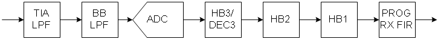
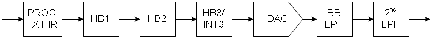
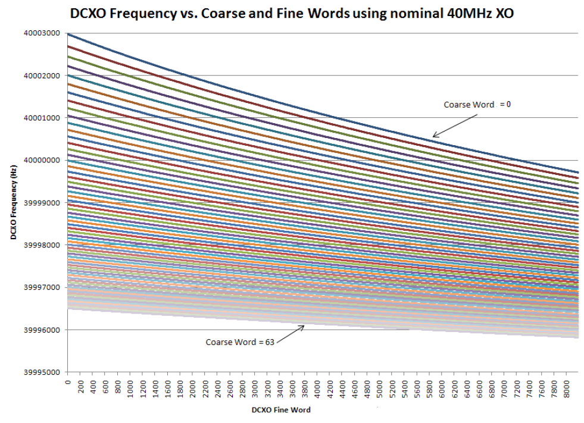

AD9361 high performance, highly integrated RF Agile Transceiver™ Linux device driver¶
The AD9361 is a high performance, highly integrated RF Agile Transceiver™. Its programmability and wideband capability make it ideal for a broad range of transceiver applications. The device combines an RF front end with a flexible mixed-signal baseband section and integrated frequency synthesizers, simplifying design-in by providing a configurable digital interface to a processor.
Supported Devices¶
Reference Circuits¶
Evaluation Boards¶
Description¶
This is a Linux industrial I/O (IIO) subsystem driver, targeting RF Transceivers. The industrial I/O subsystem provides a unified framework for drivers for many different types of converters and sensors using a number of different physical interfaces (i2c, spi, etc). See IIO for more information.
Source Code¶
Status¶
| Source | Mainlined? |
|---|---|
| git | No |
Files¶
| Function | File |
|---|---|
| driver | drivers/iio/adc/ad9361.c |
| driver | drivers/iio/adc/ad9361_conv.c |
| include | drivers/iio/adc/ad9361.h |
| devicetree bindings | Documentation/devicetree/bindings/iio/adc/adi,ad9361.txt |
Device Driver Customization¶
Please follow the link here for detailed options and examples:
Example Linux Device-Tree Initialization¶
The AD9361 driver is a spi-bus driver and can currently only be instantiated via device tree.
Required devicetree properties:
compatible: Should always be “adi,ad9361”, “adi,ad9363” or “adi,ad9364”
reg: SPI slave select number
| Function | File |
|---|---|
| FMCOMMS2/3 Device Tree | adi-fmcomms2.dtsi |
| FMCOMMS4 Device Tree | adi-fmcomms4.dtsi |
| FMCOMMS5 Device Tree | adi-fmcomms5.dtsi |
Enabling Linux driver support¶
Configure kernel with “make menuconfig” (alternatively use “make xconfig” or “make qconfig”)
Note
The AD9361 driver depends on CONFIG_SPI
Adding Linux driver support¶
Configure kernel with “make menuconfig” (alternatively use “make xconfig” or “make qconfig”)
Linux Kernel Configuration
Device Drivers --->
<*> Industrial I/O support --->
--- Industrial I/O support
-*- Enable ring buffer support within IIO
-*- Industrial I/O lock free software ring
-*- Enable triggered sampling support
*** Analog to digital converters ***
[--snip--]
<*> Analog Devices AD9467 AD9643 High-Speed AXI ADC driver
[--snip--]
Hardware configuration¶
Driver testing / API¶
Note
TIP: An example program which uses the interface can be found here:
General attribute naming convention:¶
in_voltage0_[…]: targets RX1in_voltage1_[…]: targets RX2 (AD9361 in 2RX2TX mode only)out_voltage0_[…]: targets TX1out_voltage1_[…]: targets TX2 (AD9361 in 2RX2TX mode only)out_altvoltage0_[…]: targets RX LOout_altvoltage1_[…]: targets TX LO
Note
Because of differences in silicon implementation; and the way an IIO device wants to be expressed as a device with channels and attributes, there may be specific attributes that are exposed on multiple channels, that control the same bit/register in the device (are duplicated for convenience or to match the IIO model). A specific example of this is:
in_voltage0_rf_port_selectin_voltage1_rf_port_select
There is only one bit in the device that controls both channels, and this is provided for convenience.
Note
Hint
This specifies any shell prompt running on the target
root:/> **cd /sys/bus/iio/devices/**
root:/sys/bus/iio/devices> ls
iio:device0 iio:device1 iio:device2 iio:device3 iio:device4
root:/sys/bus/iio/devices> **cd iio:device1**
root:/sys/bus/iio/devices/iio:device1# ls -l
total 0
-rw-r--r-- 1 root root 4096 Jan 15 13:33 calib_mode
-r--r--r-- 1 root root 4096 Jan 15 13:49 calib_mode_available
-rw-r--r-- 1 root root 4096 Jan 15 13:32 dcxo_tune_coarse
-rw-r--r-- 1 root root 4096 Jan 15 13:32 dcxo_tune_fine
-r--r--r-- 1 root root 4096 Jan 15 13:49 dev
-rw-r--r-- 1 root root 4096 Jan 15 13:33 ensm_mode
-r--r--r-- 1 root root 4096 Jan 15 13:49 ensm_mode_available
--w------- 1 root root 4096 Jan 15 13:49 filter_fir_config
-rw-r--r-- 1 root root 4096 Jan 15 13:32 in_out_voltage_filter_fir_en
-rw-r--r-- 1 root root 4096 Jan 15 13:49 in_temp0_input
-rw-r--r-- 1 root root 4096 Jan 15 13:33 in_voltage0_gain_control_mode
-rw-r--r-- 1 root root 4096 Jan 15 13:32 in_voltage0_hardwaregain
-rw-r--r-- 1 root root 4096 Jan 15 13:33 in_voltage0_rf_port_select
-rw-r--r-- 1 root root 4096 Jan 15 13:49 in_voltage0_rssi
-rw-r--r-- 1 root root 4096 Jan 15 13:33 in_voltage1_gain_control_mode
-rw-r--r-- 1 root root 4096 Jan 15 13:32 in_voltage1_hardwaregain
-rw-r--r-- 1 root root 4096 Jan 15 13:49 in_voltage1_rf_port_select
-rw-r--r-- 1 root root 4096 Jan 15 13:49 in_voltage1_rssi
-rw-r--r-- 1 root root 4096 Jan 15 13:49 in_voltage2_offset
-rw-r--r-- 1 root root 4096 Jan 15 13:49 in_voltage2_raw
-rw-r--r-- 1 root root 4096 Jan 15 13:49 in_voltage2_scale
-rw-r--r-- 1 root root 4096 Jan 15 13:32 in_voltage_bb_dc_offset_tracking_en
-rw-r--r-- 1 root root 4096 Jan 15 13:32 in_voltage_filter_fir_en
-r--r--r-- 1 root root 4096 Jan 15 13:49 in_voltage_gain_control_mode_available
-rw-r--r-- 1 root root 4096 Jan 15 13:32 in_voltage_quadrature_tracking_en
-rw-r--r-- 1 root root 4096 Jan 15 13:32 in_voltage_rf_bandwidth
-rw-r--r-- 1 root root 4096 Jan 15 13:32 in_voltage_rf_dc_offset_tracking_en
-r--r--r-- 1 root root 4096 Jan 15 13:49 in_voltage_rf_port_select_available
-rw-r--r-- 1 root root 4096 Jan 15 13:33 in_voltage_sampling_frequency
-r--r--r-- 1 root root 4096 Jan 15 13:49 name
-rw-r--r-- 1 root root 4096 Jan 15 13:49 out_altvoltage0_RX_LO_fastlock_load
-rw-r--r-- 1 root root 4096 Jan 15 13:49 out_altvoltage0_RX_LO_fastlock_recall
-rw-r--r-- 1 root root 4096 Jan 15 13:49 out_altvoltage0_RX_LO_fastlock_save
-rw-r--r-- 1 root root 4096 Jan 15 13:49 out_altvoltage0_RX_LO_fastlock_store
-rw-r--r-- 1 root root 4096 Jan 15 13:33 out_altvoltage0_RX_LO_frequency
-rw-r--r-- 1 root root 4096 Jan 15 13:49 out_altvoltage1_TX_LO_fastlock_load
-rw-r--r-- 1 root root 4096 Jan 15 13:49 out_altvoltage1_TX_LO_fastlock_recall
-rw-r--r-- 1 root root 4096 Jan 15 13:49 out_altvoltage1_TX_LO_fastlock_save
-rw-r--r-- 1 root root 4096 Jan 15 13:49 out_altvoltage1_TX_LO_fastlock_store
-rw-r--r-- 1 root root 4096 Jan 15 13:33 out_altvoltage1_TX_LO_frequency
-rw-r--r-- 1 root root 4096 Jan 15 13:32 out_voltage0_hardwaregain
-rw-r--r-- 1 root root 4096 Jan 15 13:33 out_voltage0_rf_port_select
-r--r--r-- 1 root root 4096 Jan 15 13:49 out_voltage0_rssi
-rw-r--r-- 1 root root 4096 Jan 15 13:32 out_voltage1_hardwaregain
-rw-r--r-- 1 root root 4096 Jan 15 13:49 out_voltage1_rf_port_select
-r--r--r-- 1 root root 4096 Jan 15 13:49 out_voltage1_rssi
-rw-r--r-- 1 root root 4096 Jan 15 13:49 out_voltage2_raw
-rw-r--r-- 1 root root 4096 Jan 15 13:49 out_voltage2_scale
-rw-r--r-- 1 root root 4096 Jan 15 13:49 out_voltage3_raw
-rw-r--r-- 1 root root 4096 Jan 15 13:49 out_voltage3_scale
-rw-r--r-- 1 root root 4096 Jan 15 13:32 out_voltage_filter_fir_en
-rw-r--r-- 1 root root 4096 Jan 15 13:32 out_voltage_rf_bandwidth
-r--r--r-- 1 root root 4096 Jan 15 13:49 out_voltage_rf_port_select_available
-rw-r--r-- 1 root root 4096 Jan 15 13:33 out_voltage_sampling_frequency
drwxr-xr-x 2 root root 0 Jan 15 13:49 power
-r--r--r-- 1 root root 4096 Jan 15 13:49 rx_path_rates
lrwxrwxrwx 1 root root 0 Jan 15 13:49 subsystem -> ../../../../../../../../bus/iio
-rw-r--r-- 1 root root 4096 Jan 15 13:33 trx_rate_governor
-r--r--r-- 1 root root 4096 Jan 15 13:49 trx_rate_governor_available
-r--r--r-- 1 root root 4096 Jan 15 13:49 tx_path_rates
-rw-r--r-- 1 root root 4096 Jan 15 13:49 uevent
root:/sys/bus/iio/devices/iio:device1#
Show device name
Note
Hint
This specifies any shell prompt running on the target
root:/sys/bus/iio/devices/iio:device1> **cat name**
ad9361-phy
Enable State Machine Controls
The AD9361 transceiver includes an Enable State Machine (ENSM), allowing real time control over the current state of the device. The ENSM has two possible control methods – SPI control (writing ensm_mode), and pin control (writing ensm_mode = pinctrl). The ENSM is controlled asynchronously by writing SPI registers to advance the current state to the next state. The ENABLE and TXNRX pins allow real time control of the current state. The ENSM allows TDD or FDD operation depending on the configuration.
Note
Hint
This specifies any shell prompt running on the target
root:/sys/bus/iio/devices/iio:device1> **cat ensm_mode_available**
sleep wait alert fdd pinctrl pinctrl_fdd_indep
FDD Mode options:
sleep
alert
fdd
pinctrl
pinctrl_fdd_indep (FDD Independent Mode)
TDD Mode options:
sleep
alert
rx
tx
pinctrl
Note
Hint
This specifies any shell prompt running on the target
root:/sys/bus/iio/devices/iio:device1> **cat ensm_mode**
fdd
root:/sys/bus/iio/devices/iio:device1> **echo alert > ensm_mode**
root:/sys/bus/iio/devices/iio:device1> **cat ensm_mode**
alert
Note
NOTE: Be aware if you you want to transition in TDD mode from RX to TX you have to go via ALERT. (Recent driver releases - do this now automatically…)
You may want to checkout the ENSM Pin-Control test script here: test_ensm_pinctrl.sh
Local Oscillator Control (LO)¶
The AD9361 transceiver contains two identical RFPLL synthesizers to generate the required LO signals. One is programmed for the RX channel and the other for the TX channel. The tuning range supported by this driver covers 70MHz to 6GHz (AD9363: 325-3800 MHz) with 2Hz tuning granularity.
Note
Hint
This specifies any shell prompt running on the target
**cat out_altvoltage0_RX_LO_frequency**
2400000000
root:/sys/bus/iio/devices/iio:device1> **echo 2450000000 > out_altvoltage0_RX_LO_frequency**
root:/sys/bus/iio/devices/iio:device1> **cat out_altvoltage0_RX_LO_frequency**
2450000000
Local Oscillator Power-down
If both, the TX and RX Local Oscillators (LO) are set to the same frequency or very close to each other. The TX LO may leak into the RX path. Usually this is avoided in TDD mode, since always only one of the LOs is enabled at a given time. However sometimes it can be beneficial in FDD mode to turn the TX LO off. Care must be taken since TX LO in Power-down mode, will cause the TX QUAD calibration to fail.
Note
Hint
This specifies any shell prompt running on the target
root:/sys/bus/iio/devices/iio:device1> **echo 0 > out_altvoltage1_TX_LO_powerdown**
root:/sys/bus/iio/devices/iio:device1> **cat out_altvoltage1_TX_LO_powerdown**
0
Note
Hint
This specifies any shell prompt running on the target
root:/sys/bus/iio/devices/iio:device1> **cat out_altvoltage0_RX_LO_powerdown**
1
External LO Support
The driver allows switching between external and internal LO on the fly. Writing 1 into out_altvoltage0_RX_LO_external/out_altvoltage1_TX_LO_external switches to external LO. Respectively writing 0 switches back to the internal synthesizer.
In case additional clocks are specified in the device tree (clock-names: “ext_tx_lo” “ext_rx_lo”). The driver automatically controls the external clock/PLL Synthesizer.
Example:
adc0_ad9361: ad9361-phy@0 {
compatible = "adi,ad9361";
/* Clocks */
clocks = <&ad9361_clkin>, <&ad9361_ext_tx_lo>, <&ad9361_ext_rx_lo>;
clock-names = "ad9361_ext_refclk", "ext_tx_lo", "ext_rx_lo";
clock-output-names = "rx_sampl_clk", "tx_sampl_clk";
Note
Hint
This specifies any shell prompt running on the target
**cat out_altvoltage0_RX_LO_frequency**
2400000000
root:/sys/bus/iio/devices/iio:device1> **echo 1 > out_altvoltage0_RX_LO_external**
root:/sys/bus/iio/devices/iio:device1> **cat out_altvoltage0_RX_LO_external**
1
FASTLOCK MODE
The device includes a Fast Lock mode that makes it possible to achieve faster than normal frequency changes by storing sets of synthesizer programming information (called “profiles”) either into device registers or the BB processor’s memory space to be recalled at a later time. The Fast Lock mode eliminates most of the overhead of synthesizer programming by allowing up to 8 full RX profiles and 8 full TX profiles of frequency configuration information (including VCO cal results) to be stored in the device for faster frequency changes. In order to use a particular profile, first it must be configured. Typically, this would be accomplished at powerup, but a new or updated profile can be defined at any convenient time.
Note
NOTE: You may want to checkout the Fastlock Pin-Control test script here: test_tx_fastlock_pinctrl.sh
Create Profile¶
To create a profile tune the synthesizer and then write the target profile number into out_altvoltageX_fastlock_store.
Valid profile range is from 0…7
Note
Hint
This specifies any shell prompt running on the target
root:/sys/bus/iio/devices/iio:device1> **echo 4242000000 > out_altvoltage0_RX_LO_frequency**
root:/sys/bus/iio/devices/iio:device1> **echo 0 > out_altvoltage0_RX_LO_fastlock_store**
Recall Profile
To recall a profile write the target profile number into out_altvoltageX_fastlock_recall. Valid profile range is from 0…7.
Reading out_altvoltageX_fastlock_recall returns the current profile number or –EINVAL if in normal synthesizer mode.
When in fastlock pin select mode (adi,[tx|rx]-fastlock-pincontrol-enable). This file needs to be written once with a value, before the pin-control can be used. This will moves the device into fastlock mode.
Note
Hint
This specifies any shell prompt running on the target
root:/sys/bus/iio/devices/iio:device1> **echo 0 > out_altvoltage0_RX_LO_fastlock_recall**
Saving a Profile
In order to use more than 8 Profiles – an existing profile can be read back and stored by the user application.
The format is: Profile# val0,val1,val2,…,val15
Note
Hint
This specifies any shell prompt running on the target
root:/sys/bus/iio/devices/iio:device1> ** echo 0 > out_altvoltage0_RX_LO_fastlock_save **
root:/sys/bus/iio/devices/iio:device1> ** cat out_altvoltage0_RX_LO_fastlock_save **
0 240,0,202,204,12,80,24,16,187,255,60,238,113,233,93,174
Loading a Profile
A previously saved profile can be loaded in any of the 8 available slots. Write the profile string into out_altvoltageX_fastlock_load
The format is: Profile# val0,val1,val2,…,val15
Note
Hint
This specifies any shell prompt running on the target
root:/sys/bus/iio/devices/iio:device1> ** echo 0 240,0,202,204,12,80,24,16,187,255,60,238,113,233,93,174 > out_altvoltage0_RX_LO_fastlock_load **
RX Signal Path
The AD9361 RX signal path passes downconverted signals (I and Q) to the baseband receiver section. The baseband RX signal path is composed of two programmable analog low-pass filters, a 12-bit ADC, and four stages of digital decimating filters. Each of the four decimating filters can be bypassed. The corner frequency for each low-pass filter is programmable via SPI registers. Figure below shows a block diagram for the AD9361 RX signal path. Note that both the I and Q paths are schematically identical to each other.
The high level in_voltage_sampling_frequency attribute effectively controls the BBPLL frequency the ADC Sample clock and all following decimating filter blocks except the FIR block which is handled upon user configuration. This IIO device attribute allows the user to control the Baseband (BB) Sample Rate in Hz granularity in the range from 521KSPS up to 61.44MSPS, also depending on the FIR filter decimation chosen. in_voltage_sampling_frequency as well as out_voltage_sampling_frequency are not entirely independent, by default the both need to match unless adi,fdd-rx-rate-2tx-enable is enabled. Then RX rate can be twice the TX rate.
Note
NOTE: In the minimum ADC rate is 25MSPS. Baseband rates below 2.083 MSPS (25MSPS/12) require FIR decimation/interpolation to be set. In other words the FIR filter needs to be configured and enabled. The minimum baseband rate with the FIR filter (decimate by 4) enabled is: 25MSPS /(4*12) = 520.83 kSPS.
Some example filters can be found here:filters
Setting / Querying the RX Sample Rate¶
Note
Hint
This specifies any shell prompt running on the target
root:/sys/bus/iio/devices/iio:device1> **cat in_voltage_sampling_frequency**
30720000
root:/sys/bus/iio/devices/iio:device1> **echo 10000000 > in_voltage_sampling_frequency**
root:/sys/bus/iio/devices/iio:device1> **cat in_voltage_sampling_frequency**
10000000
List chosen RX Path Rates
This attribute lists the current rates in the various digital blocks.
| Stage | Description | Ratio |
|---|---|---|
| BBPLL | The Baseband PLL frequency | |
| ADC | The ADC sample rate | BBPLL/ADC = BBPLL divider |
| R2 | Rate of the HB3/DEC3 filter | ADC/R2 = HB3 decimation factor |
| R1 | Rate of the HB2 filter | R2/R1 = HB2 decimation factor |
| RF | Rate of the HB1 filter | R1/RF = HB1 decimation factor |
| RXSAMP | RX sampling rate or baseband rate | RF/RXSAMP = FIR decimation factor |
Note
Hint
This specifies any shell prompt running on the target
root:/sys/bus/iio/devices/iio:device1> **cat rx_path_rates**
BBPLL:983040000 ADC:245760000 R2:122880000 R1:61440000 RF:30720000 RXSAMP:30720000
TX Signal Path
The AD9361 TX signal path receives 12-bit 2s complement data in I-Q format from the AD9361 digital interface, and each channel (I and Q) passes this data through four digital interpolating filters to a 12-bit DAC. Each of the four interpolating filters can be bypassed. The DAC’s analog output is passed through two low pass filters prior to the RF mixer. The corner frequency for each low-pass filter is programmable via SPI registers. Figure 1 shows a block diagram for the AD9361 TX signal path. Note that both the I and the Q paths are schematically identical to each other. The four blocks leading up to the DAC in shown figure below comprise the digital filtering for the transmit path. These programmable filters provide the bandwidth limiting required prior to conversion from digital to analog. They also provide interpolation to translate from the input data rate to the rate needed for proper digital to analog conversion. In each filter, interpolation is performed first, followed by the filter transfer function.
The high level out_voltage_sampling_frequency attribute effectively controls the BBPLL frequency the ADC Sample clock, the DAC clock and all following interpolation filter blocks except the FIR block which is handled upon user configuration. This IIO device attribute allows the user to control the Baseband (BB) Sample Rate in Hz granularity in the range from 218KSPS up to 61.44MSPS, also depending on the FIR filter decimation chosen. out_voltage_sampling_frequency as well as in_voltage_sampling_frequency are not entirely independent, by default the both need to match unless adi,fdd-rx-rate-2tx-enable is set. Then RX rate can be twice the TX rate, however this mode needs to be supported by the FPGA/Baseband-Processor. The feedback clock must be externally divided.
Note
NOTE: In the minimum ADC rate is 25MSPS. Baseband rates below 2.083 MSPS (25MSPS/12) require FIR decimation/interpolation to be set. In other words the FIR filter needs to be configured and enabled. The minimum baseband rate with the FIR filter (decimate by 4) enabled is: 25MSPS /(4*12) = 520.83 kSPS.
Some example filters can be found here:filters
Setting / Querying the TX Sample Rate¶
Note
Hint
This specifies any shell prompt running on the target
root:/sys/bus/iio/devices/iio:device1> **cat out_voltage_sampling_frequency**
30720000
root:/sys/bus/iio/devices/iio:device1> **echo 10000000 > out _voltage_sampling_frequency**
root:/sys/bus/iio/devices/iio:device1> **cat out _voltage_sampling_frequency**
10000000
List chosen TX Path Rates
This attribute lists the current rates in the various digital blocks.
| Stage | Description | Ratio |
|---|---|---|
| TXSAMP | TX sample rate or baseband rate | TF/TXSAMP = FIR interpolation factor |
| TF | Rate of the HB1 filter | T1/TF = HB1 interpolation factor |
| T1 | Rate of the HB2 filter | T2/T1 = HB2 interpolation factor |
| T2 | Rate of the HB3/INT3 filter | DAC/T2 = HB3 interpolation factor |
| DAC | The DAC sample rate | ADC/DAC = DAC clock divider |
| BBPLL | The Baseband PLL frequency | BBPLL/ADC = BBPLL divider |
Note
Hint
This specifies any shell prompt running on the target
root:/sys/bus/iio/devices/iio:device1> **cat tx_path_rates**
BBPLL:983040000 DAC:122880000 T2:122880000 T1:61440000 TF:30720000 TXSAMP:30720000
Rate Governors
The rate governor option allows the user to influence the ADC sample rate and decimation/interpolation rates chosen in the followed digital blocks. It mainly influences whether RX HB3/DEC3/ and TX HB3/INT3 decimates/interpolates by 3 or 2, thus resulting in an higher oversampling rate. Decimate by 3 doesn’t necessarily produce higher performance. Therefore the default setting of Nominal is always a good option.
List available Rate Governors
Note
Hint
This specifies any shell prompt running on the target
root:/sys/bus/iio/devices/iio:device1> **cat trx_rate_governor_available**
nominal highest_osr
Selecting Rate Governor
Note
Hint
This specifies any shell prompt running on the target
root:/sys/bus/iio/devices/iio:device1> **cat trx_rate_governor**
highest_osr
root:/sys/bus/iio/devices/iio:device1> **echo nominal > trx_rate_governor**
root:/sys/bus/iio/devices/iio:device1> **cat trx_rate_governor**
nominal
Digital FIR Filter controls
The last/first digital filter in the RX/TX signal path is a programmable poly-phase FIR filter. The RX/TX FIR filter can decimate/interpolate by a factor of 1, 2, or 4, or it can be bypassed if not needed. The filter taps are configurable in groups of 16 between a minimum of 16 and a maximum of 128 taps. The RX FIR also has a programmable gain of -12dB, -6dB, 0dB, or +6dB. The filter provides a fixed +6dB gain to maximize dynamic range, so the programmable gain is typically set to -6dB to produce a net gain of 0dB. The TX FIR also has a programmable gain setting of 0dB or -6dB. Be aware there are some limitations in terms of the maximum number of taps supported by the different clock ratios, please consult the AD9361 manual for more details. The AD9361 device driver will warn if a programmed filter doesn’t match the limits.
In general the filters are either created using the:
Some per-generated examples can be found here: AD936x example filters
Query current filter Configuration
Note
Hint
This specifies any shell prompt running on the target
root:/sys/bus/iio/devices/iio:device1> **cat filter_fir_config**
FIR Rx 0,0 Tx 0,0
Return Value:
Rx
Load a Filter
Query current filter Configuration
Note
Hint
This specifies any shell prompt running on the target
root:/sys/bus/iio/devices/iio:device1> **cat LTE20.txt > filter_fir_config**
root:/sys/bus/iio/devices/iio:device1> **cat filter_fir_config**
FIR Rx 128,2 Tx 128,2
Each file requires a short header:
Lines prefixed with ‘#’ are ignored
Coefficients are signed 16-bit numbers
Multiple filter files can be loaded until each RX and each TX has its own set of coefficients
Syntax and examples shown below
Syntax
**RX** [1,2,3(both)] **GAIN** [-12, -6, 0, 6] **DEC** [1,2,4]
**TX** [1,2,3(both)] **GAIN** [-6, 0] **INT** [1,2,4]
[**RRX** <BBPLL ADC R2 R1 RF RXSAMP>]
[**RTX** <BBPLL DAC T2 T1 TF TXSAMP>]
[**BWRX** <RX RF Bandwidth>]
[**BWTX** <RX TF Bandwidth>]
<tx-coef0, rx-coef0>
<tx-coef1, rx-coef1>
<..., ...>
<tx-coefN-1, rx-coefN-1>
Examples
#RX [1,2,3(both)] GAIN [-12, -6, 0, 6] DEC [1,2,4]
#TX [1,2,3(both)] GAIN [-6, 0] INT [1,2,4]
#tx,rx
RX 3 GAIN -6 DEC 2
TX 3 GAIN 0 INT 2
RTX 983040000 245760000 245760000 122880000 61440000 30720000
RRX 983040000 491520000 245760000 122880000 61440000 30720000
BWTX 19365438
BWRX 19365514
-5,49
0,217
--snip--
#RX [1,2,3(both)] GAIN [-12, -6, 0, 6] DEC [1,2,4]
#TX [1,2,3(both)] GAIN [-6, 0] INT [1,2,4]
#tx,rx
RX 3 GAIN -6 DEC 2
-5
0
--snip--
#RX [1,2,3(both)] GAIN [-12, -6, 0, 6] DEC [1,2,4]
#TX [1,2,3(both)] GAIN [-6, 0] INT [1,2,4]
#tx,rx
TX 3 GAIN 0 INT 2
49
217
--snip--
Filter Enable / Disable
To enable or disable the RX or TX path filters simply write 0,N or 1,Y to one of below control files. Combo attribute in_out_voltage_filter_fir_en allows to simultaneously enable both filters. This might sometimes be necessary, depending on the RX/TX Path Sampling Frequency and FIR interpolation and decimation rates chosen.
Note
Hint
This specifies any shell prompt running on the target
root:/sys/bus/iio/devices/iio:device1> **cat in_voltage_filter_fir_en**
0
root:/sys/bus/iio/devices/iio:device1> **echo 1 > in_voltage_filter_fir_en**
root:/sys/bus/iio/devices/iio:device1> **cat in_voltage_filter_fir_en**
1
Note
Hint
This specifies any shell prompt running on the target
root:/sys/bus/iio/devices/iio:device1> **cat out_voltage_filter_fir_en**
0
Note
Hint
This specifies any shell prompt running on the target
root:/sys/bus/iio/devices/iio:device1> **cat in_out_voltage_filter_fir_en**
0
RF Bandwidth Analog Filter Control
RX RF Bandwidth Control
The AD9361 features several Rx Analog Filter Blocks (RX TIA LPF, RX BB LPF) Analog filtering before the ADC reduces spurious signal levels by removing mixer products and providing general low pass filtering prior to downconversion. The RX TIA LPF is a single-pole low-pass filter with a programmable 3dB corner frequency. The RX BB LPF is a third-order Butterworthlow-passfilter with a programmable 3dB corner frequency.
These filters can be set by writing a single device attribute (in_voltage_rf_bandwidth)
Note
Hint
This specifies any shell prompt running on the target
root:/sys/bus/iio/devices/iio:device1> **cat in_voltage_rf_bandwidth**
18000000
root:/sys/bus/iio/devices/iio:device1> **echo 9000000 > in_voltage_rf_bandwidth**
root:/sys/bus/iio/devices/iio:device1> **cat in_voltage_rf_bandwidth**
9000000
TX RF Bandwidth Control
The AD9361 features several Tx Analog Filter Blocks (TX BB LPF, TX Secondary LPF) Analog filtering after the DAC reduces spurious outputs by removing sampling artifacts and providing general low pass filtering prior to upconversion. The TX BB LPF is a third-order Butterworth low-pass filter with a programmable 3dB corner frequency. The TX Secondary LPF is a single-polelow-passfilter with a programmable 3dB corner frequency.
These filters can be set by writing a single device attribute (out_voltage_rf_bandwidth)
Note
Hint
This specifies any shell prompt running on the target
root:/sys/bus/iio/devices/iio:device1> **cat out_voltage_rf_bandwidth**
18000000
root:/sys/bus/iio/devices/iio:device1> **echo 9000000 > out_voltage_rf_bandwidth**
root:/sys/bus/iio/devices/iio:device1> **cat out_voltage_rf_bandwidth**
9000000
RX Gain Control
The versatile and highly configurable AD9361 transceiver has several gain control modes that enable its use in a variety of applications. Fully automatic gain control (AGC) modes are available that address time division duplex (TDD) as well as frequency division duplex (FDD) scenarios. In addition, the AD9361 has manual gain control (MGC) options that allow the baseband processor (BBP) to control the gain.
The default ADI provided optimized gain tables in full table mode provide 77 entries and in split gain table mode 41. Each index results typically in a 1 dB monotonic gain step. There are a total of 3 different tables available for different RX LO frequency ranges. The tables are swapped in and out automatically by the driver based on RX LO settings.
Standard Tables:
| RX LO Range | Min GAIN | Max Gain |
|---|---|---|
| 70 ... 1300 MHz | -1 dB | 73 dB |
| 1300 ... 4000 MHz | -3 dB | 71 dB |
| 4000 ... 6000 MHz | -10 dB | 62 dB |
Custom gain tables can be loaded automatically during driver probe or anytime later via the gain_table_config sysfs attribute. Tables must be stored in the /lib/firmware folder, or compiled into the kernel using the CONFIG_FIRMWARE_IN_KERNEL, CONFIG_EXTRA_FIRMWARE config options. The table loaded during driver probe can be specified using following device tree property:
adi,gaintable-name = “ad9361_std_gaintable”;
In case no table is specified or loaded, the driver will continue to use the provided standard gain tables.
Gain tables are stored in a human readable file, with the format specified below. Up to 15 gain tables (for different frequency ranges, or gain table modes) can be provided in a single file.
Example: ad9361_std_gaintable
<list>
<gaintable [AD9361|AD9364] type=[FULL|SPLIT] dest=[1|2|3] start=FREQUENCY1_Hz end=FREQUENCY2_Hz>
gain_in_dB, reg_0x131, reg_0x132, reg_0x133
gain_in_dB, reg_0x131, reg_0x132, reg_0x133
gain_in_dB, reg_0x131, reg_0x132, reg_0x133
…
</gaintable>
...
</list>
Assumptions:
Gain tables must be monotonic
gain_in_dB: is the absolute Gain in dB (signed char format: -128…127)
reg_0x131: Ext LNA, Int LNA, & Mixer Gain Word
reg_0x132: TIA & LPF Word
reg_0x133: DC Cal bit & Dig Gain Word
end must be greater than start frequency (in Hz)
There must be sufficient tables provided to support the entire used tuning range
dest specifies the targeted RX. (1 = RX1, 2=RX2, 3=RX1 and RX2) (not used at the moment default is always RX1 and RX2)
Loading a gain table
Note
Hint
This specifies any shell prompt running on the target
root@analog:/sys/bus/iio/devices/iio:device1# ls /lib/firmware/ad9*
ad9361_std_gaintable
root@analog:/sys/bus/iio/devices/iio:device1# cat /lib/firmware/ad9361_std_gaintable > gain_table_config
Reading a gain table
Reading the gain_table_config attribute returns the current gain table that is loaded into the transceiver IC. The printed format matches the format used in the gaintable file.
Reading the gain table only displays the gain table that will be used with the current RX_LO frequency setting.
Note
Hint
This specifies any shell prompt running on the target
root:/sys/bus/iio/devices/iio:device1> echo 2450000000 > out_altvoltage0_RX_LO_frequency
root:/sys/bus/iio/devices/iio:device1> cat out_altvoltage0_RX_LO_frequency
2450000000
Note
Hint
This specifies any shell prompt running on the target
root@analog:/sys/bus/iio/devices/iio:device1# cat gain_table_config
<gaintable AD9361 type=FULL dest=3 start=1300000000 end=4000000000>
-3, 0x00, 0x00, 0x20
-3, 0x00, 0x00, 0x00
-3, 0x00, 0x00, 0x00
-2, 0x00, 0x01, 0x00
-1, 0x00, 0x02, 0x00
0, 0x00, 0x03, 0x00
1, 0x00, 0x04, 0x00
2, 0x00, 0x05, 0x00
3, 0x01, 0x03, 0x20
4, 0x01, 0x04, 0x00
5, 0x01, 0x05, 0x00
6, 0x01, 0x06, 0x00
7, 0x01, 0x07, 0x00
8, 0x01, 0x08, 0x00
[--snip--]
69, 0x6D, 0x38, 0x20
70, 0x6E, 0x38, 0x20
71, 0x6F, 0x38, 0x20
</gaintable>
Gain control modes
Note
Hint
This specifies any shell prompt running on the target
root:/sys/bus/iio/devices/iio:device1> **cat in_voltage_gain_control_mode_available**
manual fast_attack slow_attack hybrid
| Mode | Description |
|---|---|
| manual | In MGC mode, the BBP controls the gain index pointer(s). In its simplest form, the BBP evaluates the digital signal level at the I/O port and then adjusts the gain appropriately. The BBP can control manual gain in one of two ways. The default method uses SPI writes (writing in_voltage[0,1]_hardwaregain) the total gain in dB. This results in different gain indices depending on the gain table loaded. Alternatively, the BBP can pulse the Control Input pins to move the gain indices. |
| slow_attack | Slow Attack Mode is intended for slowly changing signals such as those found in some FDD applications such as WCDMA and FDD LTE. The Slow Attack AGC uses a 2nd order control loop with hysteresis that changes the gain in order to keep the average signal power within a programmable window |
| hybrid | The AGC hybrid mode is the same as the slow AGC mode with the exception that the gain update counter is not used. Instead, gain updates occur when the BBP pulls the CTRL_IN2 signal high. The “hybrid” term arises because the BBP has taken some control of the algorithm away from the AD9361 so gain control is no longer completely automatic. |
| fast_attack | Fast Attack Mode is intended for waveforms that “burst” on and off, such as those found in TDD applications or GSM/EDGE FDD applications. The AGC responds very quickly to overloads at the start of a burst so that the AGC can settle to an optimum gain index by the time the data portion of the signal arrives. |
Querying or Setting a Gain Control Mode
Note
Hint
This specifies any shell prompt running on the target
root:/sys/bus/iio/devices/iio:device1> **cat in_voltage0_gain_control_mode**
slow_attack
root:/sys/bus/iio/devices/iio:device1> **echo manual > in_voltage0_gain_control_mode**
root:/sys/bus/iio/devices/iio:device1> **cat in_voltage0_gain_control_mode**
manual
Note
Hint
This specifies any shell prompt running on the target
root:/sys/bus/iio/devices/iio:device1> **cat in_voltage1_gain_control_mode**
slow_attack
Reading the current Gain
Supported in all available Gain control modes
Note
Hint
This specifies any shell prompt running on the target
root:/sys/bus/iio/devices/iio:device1> **cat in_voltage0_hardwaregain**
61.000000 dB
Note
Hint
This specifies any shell prompt running on the target
root:/sys/bus/iio/devices/iio:device1> **cat in_voltage1_hardwaregain**
71.000000 dB
MGC setting the current Gain
Only available in Manual Gain Control Mode (MGC)
Note
Hint
This specifies any shell prompt running on the target
root:/sys/bus/iio/devices/iio:device1> **echo 42 > in_voltage0_hardwaregain**
root:/sys/bus/iio/devices/iio:device1> **cat in_voltage0_hardwaregain**
42.000000 dB
Tx Attenuation Control
The TX attenuation/gain can be individually controlled for TX1 and TX2. The range is from 0 to -89.75 dB in 0.25dB steps. The nomenclature used here is gain instead of attenuation, so all values are expressed negative.
Note
Hint
This specifies any shell prompt running on the target
root:/sys/bus/iio/devices/iio:device1> **cat out_voltage0_hardwaregain**
-10.000000 dB
root:/sys/bus/iio/devices/iio:device1> **echo -42.25 > out_voltage0_hardwaregain**
root:/sys/bus/iio/devices/iio:device1> **cat out_voltage0_hardwaregain**
-42.250000 dB
Note
Hint
This specifies any shell prompt running on the target
root:/sys/bus/iio/devices/iio:device1> **cat out_voltage1_hardwaregain**
-10.000000 dB
Received Strength Signal Indicator (RSSI)
Given the wide variety of applications for which the AD9361 is suited, the received strength signal indicator (RSSI) may be setup in one of several configurations, allowing the user to optimize the RSSI to produce extremely accurate results with a minimum of BBP interaction. The AD9361 measures RSSI by measuring the power level in dB and compensating for the receive path gain. The various options available support both TDD and FDD applications. Note that the RSSI value is not in absolute units. Equating the RSSI read-back value to an absolute power level (e.g., in dBm) requires a system factory or bench calibration. To calibrate the RSSI word to an absolute reference, inject a signal into the antenna port of the completed system and read the RSSI word. From this test, generate a correction factor that equates the RSI word to the injected signal level at the antenna port.
Note
Hint
This specifies any shell prompt running on the target
root:/sys/bus/iio/devices/iio:device1> **cat in_voltage0_rssi**
104.50 dB
Note
Hint
This specifies any shell prompt running on the target
root:/sys/bus/iio/devices/iio:device1> **cat in_voltage1_rssi**
116.75 dB
TX Received Strength Signal Indicator (TX RSSI)
Recognizing that in TDD systems the receiver and transmitter are not operating simultaneously, the AD9361 provides the ability to reuse the receiver circuitry by multiplexing the power detector into the receive path. The receiver RSSI circuitry is then turned on during the transmit burst and results in accurate Tx RSSI measurements.
Note
NOTE: This feature is only available in TX MONITOR MODE set in_voltage0_rf_port_select to one of the following modes: TX_MONITOR1, TX_MONITOR2 or TX_MONITOR1_2
Note
Hint
This specifies any shell prompt running on the target
root:/sys/bus/iio/devices/iio:device1> **cat out_voltage0_rssi**
30.50 dB
Note
Hint
This specifies any shell prompt running on the target
root:/sys/bus/iio/devices/iio:device1> **cat out_voltage1_rssi**
0.00 dB
Calibration Mode Controls
Note
Hint
This specifies any shell prompt running on the target
root:/sys/bus/iio/devices/iio:device1> **cat calib_mode_available**
auto manual manual_tx_quad tx_quad rf_dc_offs rssi_gain_step
| Option | Description |
|---|---|
| auto | Run TX Quadrature Calibration when moving to a new carrier frequency that is more than 100 MHz away from the previous carrier frequency |
| manual | Disables auto mode |
| manual_tx_quad | Disables auto mode and also prevents any TX Quad Calibration unless manually invoked using tx_quad |
| rf_dc_offs | Issue RF DC Offset Calibration |
| tx_quad | Issue TX Quadrature Calibration (may have a second optional parameter (cal phase value 0..31) |
| rssi_gain_step | Runs the RSSI gain step calibration. Before running this calibration, provide a single tone within the channel bandwidth and monitor the received data. Adjust the tone amplitude until the received data is within a few dB of full scale but not overloading. Once this calibration is done, calib_mode will be automatically set to its previous value. |
Note
Hint
This specifies any shell prompt running on the target
root:/sys/bus/iio/devices/iio:device1> **cat calib_mode**
auto
Note
Hint
This specifies any shell prompt running on the target
root:/sys/bus/iio/devices/iio:device1> **echo tx_quad > calib_mode **
With optional calibration phase offset value
Please see the FAQ for more information
Note
Hint
This specifies any shell prompt running on the target
root:/sys/bus/iio/devices/iio:device1> **echo tx_quad 14 > calib_mode **
Force tx quad phase search
Note
Hint
This specifies any shell prompt running on the target
root:/sys/bus/iio/devices/iio:device1> **echo tx_quad -2 > calib_mode **
Calibration Tracking Controls
Writing 0, N or 1, Y to the below attributes either disables or enables the corresponding tracking option.
Note
Hint
This specifies any shell prompt running on the target
root:/sys/bus/iio/devices/iio:device1> **cat in_voltage_quadrature_tracking_en**
1
root:/sys/bus/iio/devices/iio:device1> **echo 0 > in_voltage_quadrature_tracking_en**
root:/sys/bus/iio/devices/iio:device1> **cat in_voltage_quadrature_tracking_en**
0
Note
Hint
This specifies any shell prompt running on the target
root:/sys/bus/iio/devices/iio:device1> **cat in_voltage_bb_dc_offset_tracking_en**
1
Note
Hint
This specifies any shell prompt running on the target
root:/sys/bus/iio/devices/iio:device1> **cat in_voltage_rf_dc_offset_tracking_en**
1
RF Port Selection
Each receive channel has 3 differential or 6 single ended inputs that can be multiplexed to the signal chain, likewise each transmitter has 2 differential outputs that can be chosen from.
Note
This setting effects all ports simultaneously. For example, there is no ability to enable R1A and R2B ports, so there are no individual controls. Everything must use the name port, therefore the nomenclature of RxA (meaning it changes both channel 1 and channel 2, to the “A” port).
Note
NOTE: Switching the RF INPUT port: Switching the RF input port:
During device driver initialization the driver runs the RF DC offset calibration only on the default RF input port specified with these attributes. So if using the RF RX B or C inputs along with the RF RX A input, you should run the calibration also, once with other input band/port selected. After calibrating each band, switching between from the A input to the B or C input should not require another calibration unless a large frequency change is made. Since the B and C inputs use the same calibration results, switching from input B to input C may require running the RF DC offset calibration. See here: Calibration Mode Controls: rf_dc_offs
Note
NOTE: Switching the RF OUTPUT port: During device driver initialization the driver runs the TX Quadrature calibration only on the default RF output port specified with these attributes. During regular operation TX Quadrature is only run on the select RF output. However the TX quadrature calibration stores a separate set of calibration results for the RF TX_A and TX_B output path. So if switching the output, the calibration must be once manually triggered. See here: Calibration Mode Controls: tx_quad
Note
Hint
This specifies any shell prompt running on the target
root:/sys/bus/iio/devices/iio:device1> **cat out_voltage_rf_port_select_available**
A B
root:/sys/bus/iio/devices/iio:device1> **cat in_voltage_rf_port_select_available**
A_BALANCED B_BALANCED C_BALANCED A_N A_P B_N B_P C_N C_P TX_MONITOR1 TX_MONITOR2 TX_MONITOR1_2
root:/sys/bus/iio/devices/iio:device1> **echo B_BALANCED > in_voltage0_rf_port_select**
DCXO Tuning (digital controlled crystal oscillator)
The AD9361 can either be clocked from an external clock source or a local crystal oscillator (XO). Since it’s likely that a Crystal oscillator is not perfect - a digital correction (DCXO) can be used to tune the external component. This only works with AT cut fundamental mode crystal resonators with a load capacitance of less than 10pF which are connected between the XTALP and XTALN pins of the AD9361.
This is what ADI’s FMCOMMS2, FMCOMMS3, and FMCOMMS4 boards are using.
By adjusting a capacitor within the AD9361, the resulting DCXO frequency can be adjusted to compensate for XO frequency tolerance and stability. dcxo_tune_coarse sets a coarse capacitor value while dcxo_tune_fine sets a fine capacitor value. Together, these two settings control the frequency of the DCXO. The resolution of the DCXO varies with coarse word with a worst case resolution (at coarse word = 0) of 0.0125 ppm. Using both coarse and fine words, the DCXO can vary the frequency over a ±60 ppm range.
After initialization (after the BBPLL and RFPLLs are programmed, calibrated, and locked), the DCXO words may be written at any time without disturbing the system.
The plot shows the variation of DCXO frequency over all possible variations of coarse and fine word. The XO nominal frequency used in this test was 40MHz.
The DCXO can be tuned using the coarse and fine tune attributes detailed below.
Note
Hint
This specifies any shell prompt running on the target
root:/sys/bus/iio/devices/iio:device1> **cat dcxo_tune_coarse**
8
Note
Hint
This specifies any shell prompt running on the target
root:/sys/bus/iio/devices/iio:device1> **cat dcxo_tune_fine**
5920
root:/sys/bus/iio/devices/iio:device1> **echo 5930 > dcxo_tune_fine**
root:/sys/bus/iio/devices/iio:device1> **cat dcxo_tune_fine**
5930
XO Correction
For systems that are using single ended crystal oscillators, or an external clock source and driving it into the XTALN pin, some correction may be necessary. What happens in this case, is you digitally correct for the oscillator offset, by determining what the actual oscillator is, and then telling the system, so it can use that specific number in it’s math for the PLL and sample rate calculations.
This is what the FMCOMMS5, ADI RF SOM2 and the PlutoSDR use.
Since every time this is written, it will re-calculate and re-program all the PLL settings (Tx LO, Rx LO, ADC and DAC sample rates), this should only be updated when disturbing the system is acceptable. (normally reprogramming the LO, or sample rates)
Note
Hint
This specifies any shell prompt running on the target
root:/sys/bus/iio/devices/iio:device1> **cat xo_correction**
40000000
root:/sys/bus/iio/devices/iio:device1> **echo 40000005 > xo_correction**
root:/sys/bus/iio/devices/iio:device1> **cat xo_correction**
40000005
Die Temperature Reading
For accurate results this read back requires a one-point factory calibration. Determine the offset between this readback in millidegree Celsius and the known device temperature. Then adjust the device tree property “adi,temp-sense-offset-signed” with a proper offset in degrees Celsius. In the OSC advanced plugin see AUX ADC/DAC/IO tab under Temp sensor offset. Also the absolute offset (signed char) is directly written into register 0x0B.
Example:
Temp Sensor Offset (Reg 0x0B) = 0xCE = -50
in_temp0_input readback = 28123 m°C -> temperature is 28 °C
Actual device temperature 24 °C
OFFSETdelta = 24 - 28 = -4
Temp Sensor Offset (corrected) = -50 - 4 = -54 = 0xCA
Note
Hint
This specifies any shell prompt running on the target
root:/sys/bus/iio/devices/iio:device1> **cat in_temp0_input**
29825
AuxADC Reading
There is an Auxiliary ADC on the chip - that can be read like any other IIO ADC.
Attributes are:
in_voltage2_offset
in_voltage2_raw
in_voltage2_scale
To obtain the reading in mV calculate: (in_voltage2_raw + in_voltage2_offset) * in_voltage2_scale
Note
Hint
This specifies any shell prompt running on the target
root:/sys/bus/iio/devices/iio:device1> **grep "" in_voltage2_***
in_voltage2_offset:57
in_voltage2_raw:1494
in_voltage2_scale:0.305250
AuxDAC Writing
There are 2 Auxiliary DACs on the chip.
Attributes are:
out_voltage2_raw
out_voltage2_scale
out_voltage3_raw
out_voltage3_scale
Note
Hint
This specifies any shell prompt running on the target
root:/sys/bus/iio/devices/iio:device1> **grep "" out_voltage2* out_voltage3***
out_voltage2_raw:306
out_voltage2_scale:1.000000
out_voltage3_raw:306
out_voltage3_scale:1.000000
root:/sys/bus/iio/devices/iio:device1> **echo 1000 > out_voltage2_raw**
RSSI Gain Step Calibration
The RSSI gain step calibration can be run by setting calib_mode to rssi_gain_step (See: ad9361#calibration_mode_controls).
Once the calibration is done, the error tables can be read and loaded again anytime using the dedicated sysfs attribute. Since the gain step calibration register values are dependent on the LO frequency, specifying them is also possible (gain_step_calib_reg_val = Maximum LNA Gain LNA, Gain difference word for Index 0, LNA Gain difference word for Index 1, LNA Gain difference word for Index 2, LNA Gain difference word for Index 3).
Note
Hint
This specifies any shell prompt running on the target
root:/sys/bus/iio/devices/iio:device1> **cat rssi_gain_step_error**
lna_error: 0 15 14 0
mixer_error: 16 16 16 16 16 16 16 16 16 16 16 16 16 16 16 0
gain_step_calib_reg_val: 192 44 16 6 0
Advanced Debug Facilities
The AD9361 driver supports a number of advanced debug controls via the kernel debugfs. How these device files/controls can be used is described here. The AD936X Advanced Plugin directly controls these and adds a user friendly interface.
Runtime Device Driver Customization
There is a large number of AD9361 Device Driver Customization options available. Typically these are supplied via Devicetree.
However for debug and evaluation purposes these can be changed during runtime. Please note that changes will be lost if the device is unbinded or the platform is rebooted. Changes will only take affect once the initialize attribute is written 1. It should also be noted that the AD9361 will take a RESET, so current settings done via the main IIO API will be lost. Accessing debugfs requires root privileges. Only device files prefixed with adi, are AD9361 Device Driver Customization Options.
In order to identify if the IIO device in question (ad9361-phy) you first need to identify the IIO device number. Therefore read the name attribute of each IIO device
Note
Hint
This specifies any shell prompt running on the target
root@analog:~# grep "" /sys/bus/iio/devices/iio:device*/name
/sys/bus/iio/devices/iio:device0/name:ad7291
**/sys/bus/iio/devices/iio:device1/name:ad9361-phy**
/sys/bus/iio/devices/iio:device2/name:xadc
/sys/bus/iio/devices/iio:device3/name:adf4351-udc-rx-pmod
/sys/bus/iio/devices/iio:device4/name:adf4351-udc-tx-pmod
/sys/bus/iio/devices/iio:device5/name:cf-ad9361-dds-core-lpc
/sys/bus/iio/devices/iio:device6/name:cf-ad9361-lpc
root@analog:~#
Change directory to /sys/kernel/debug/iio/ iio:deviceX.
Note
Hint
This specifies any shell prompt running on the target
root@analog:~# cd /sys/kernel/debug/iio/iio:device1
root@analog:/sys/kernel/debug/iio/iio:device1# **ls**
[--snip--]
adi,txmon-2-lo-cm
adi,txmon-dc-tracking-enable
adi,txmon-delay
adi,txmon-duration
adi,txmon-high-gain
adi,txmon-low-gain
adi,txmon-low-high-thresh
adi,txmon-one-shot-mode-enable
adi,update-tx-gain-in-alert-enable
adi,xo-disable-use-ext-refclk-enable
bist_prbs
bist_timing_analysis
bist_tone
calibration_switch_control
digital_tune
direct_reg_access
gaininfo_rx1
gaininfo_rx2
initialize
loopback
Example to change the driver from FDD into TDD mode operation
Note
Hint
This specifies any shell prompt running on the target
root@analog:/sys/kernel/debug/iio/iio:device1# **cat adi,frequency-division-duplex-mode-enable**
1
root@analog:/sys/kernel/debug/iio/iio:device1# **cat /sys/bus/iio/devices/iio:device1/ensm_mode_available**
sleep wait alert **fdd pinctrl pinctrl_fdd_indep**
root@analog:/sys/kernel/debug/iio/iio:device1# **echo 0 > adi,frequency-division-duplex-mode-enable**
root@analog:/sys/kernel/debug/iio/iio:device1# **echo 1 > initialize**
root@analog:/sys/kernel/debug/iio/iio:device1# **cat /sys/bus/iio/devices/iio:device1/ensm_mode_available**
sleep wait alert **rx tx pinctrl**
GPO Manual Control
This attribute allows controlling the GPO[0…3] via debugfs.
In order to use these pins, adi,gpo-manual-mode-enable must be enabled.
SYNTAX:
gpo_set
| Enable |
|---|
| Value |
| 0 |
| 1 |
| X |
Example:
Note
Hint
This specifies any shell prompt running on the target
# cd /sys/kernel/debug/iio/iio:device1
# echo 1 > adi,gpo-manual-mode-enable
# echo 0 1 > gpo_set
# echo 0 0 > gpo_set
# echo 0xF 0xF > gpo_set
# echo 0xF 0 > gpo_set
Build-In Self-Test (BIST)
Controling these attribute files directly take effect and therefore don’t require the initialize sequence.
Test functionality exposed here is only meant to route or inject test patterns/data than can be used to validate the Digital Interface or functionality of the device.
BIST Tone
User selectable tone (with frequency and level selection), that can either injected into the RX or TX path. A MASK can be supplied to disable certain channels. A masked channel (box check) is not driving any data.
SYNTAX:
bist_tone
| Injection Point |
|---|
| Value |
| 0 |
| 1 |
| 2 |
| Tone Frequency |
|---|
| Value |
| 0 |
| 1 |
| 2 |
| 3 |
| > 3 |
| Tone Level (dbFS) |
|---|
| Value |
| 0 |
| 6 |
| 12 |
| 18 |
| Channel Mask |
|---|
| Bit |
| 0 |
| 1 |
| 2 |
| 3 |
Example: Inject -6dBFS tone at Fsample/32 into RX (all channels enabled)
Note
Hint
This specifies any shell prompt running on the target
root@analog:/sys/kernel/debug/iio/iio:device1# **echo 2 0 6 0 > bist_tone **
PRBS
Pseudorandom Binary Sequence (PRBS) that can either injected into the RX or TX path.
SYNTAX:
bist_prbs
| Injection Point |
|---|
| Value |
| 0 |
| 1 |
| 2 |
Example: Inject PRBS into RX
Note
Hint
This specifies any shell prompt running on the target
root@analog:/sys/kernel/debug/iio/iio:device1# **echo 2 > bist_prbs **
BIST Loopback
Allows either to digitally loopback TX data into the RX path or vice versa.
Digital TX -> Digital RX loopback : The loopback happens inside the AD9361/4 close to the internal digital interface block. The entire RF section is bypassed. This can be used to validate (monitor on RX) the digital samples/symbols sent to the device.
RF RX -> RF TX loopback : The loopback happens in the ADI provided HDL core. The Transmitter will transmit anything that the receiver receives. The entire RF chain is active (Sample rates, RF bandwidth and FIR settings will all effect the transmission.
SYNTAX:
loopback
| Value | Mode |
|---|---|
| 0 | Disable |
| 1 | Digital TX -> Digital RX |
| 2 | RF RX -> RF TX |
Example: Digital TX -> Digital RX
Note
Hint
This specifies any shell prompt running on the target
root@analog:/sys/kernel/debug/iio/iio:device1# **echo 1 > loopback **
BIST Timing Analysis
bist_timing_analysis: See here: Digital Interface Timing Verification
Digital Tune
digital_tune: See here: Digital Interface Timing Verification